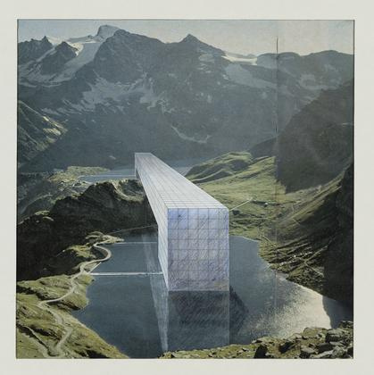
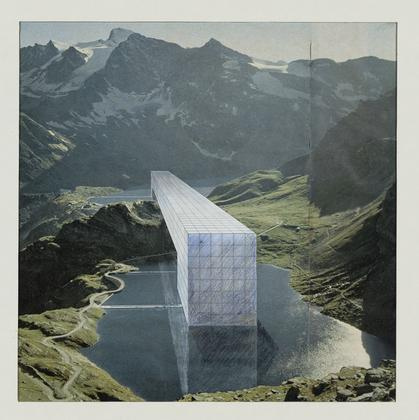
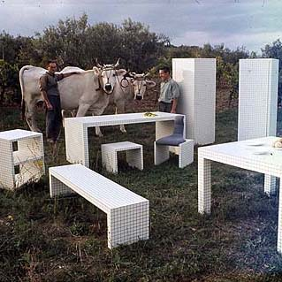
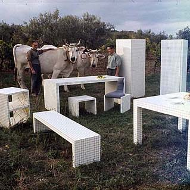
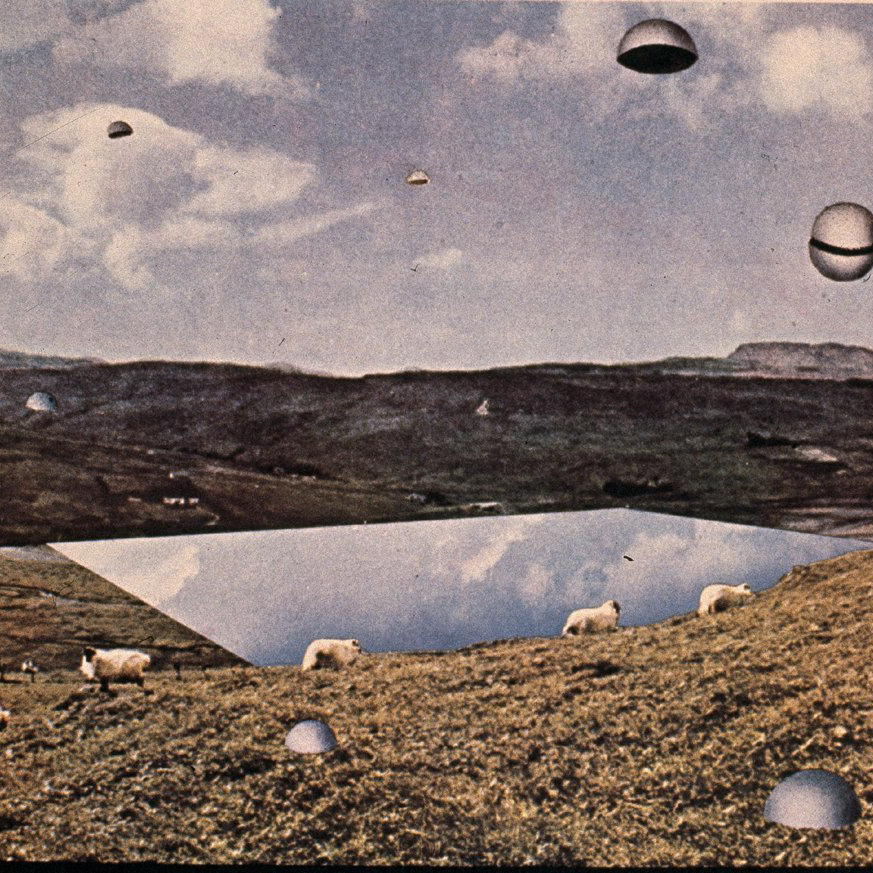
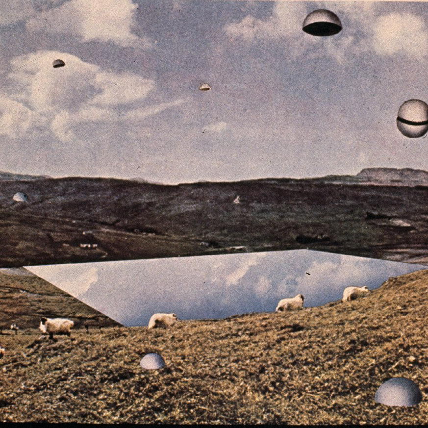

CONTINUOUS MONUMENT
The architects from Superstudio movement were trying to understand the order on the earth with the help of architecture. There is a "modeate utopia" to imagine a near future in which all architecture will be created with a single act. The continuous movement is a form of architecture all equally emerging from a single continuous environment; the world rendered uniform by technology, culture and all the other inevitable forms of imperialism.
 


FURNITURE
In the early 1970s, the collective started to use the grid in a collection of furniture manufactured by the Italian company Zanotta. This basic geometric pattern, used for highly functional purposes, served as a statement on the lifestyle and cultural background of the time. The Quaderna table is still in production today.


ARCHITECTURE AS IMAGES
The practice of collage allowed Superstudio to address the issue of modernism and the illusion of the grandiose that was still dominant in the mid-1960s. The juxtaposition of gigantic structures wrapped in their signature monochrome black-and-white grid pattern in the foreground of pastoral scenes or natural landmarks such as Niagara Falls or the San Francisco bay, serve as criticism of the modernist credo.
 


12 IDEAL CITIES
“Twelve Ideal Cities”, originally published in AD magazine, features 12 fantasies of urban planning gone haywire. What Superstudio are offering is a spurious utopia designed to make one reflect on how the world could look if the the accepted norms of 1950’s and early 1960’s design and urban planning progressed unchecked. Among them, “City of Hemispheres” (pictured above) imagines a crystal lake hosting more than ten million sarcophagi, the occupants kept alive by technology and granted control over the flying hemispheres, through which they are fed sensory stimuli.